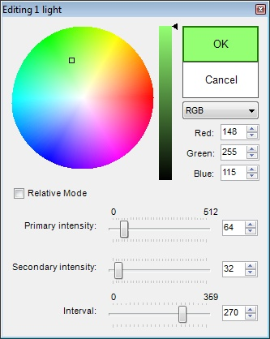

颜色选择器（Color Picker）插件可让你快速编辑动态光源（Dynamic Light）的属性，以及扇区（Sector）的 "lightcolor" 和 "fadecolor" 属性。
默认按键： K
位置： 首选项 -> 控制 -> 工具 -> 打开颜色选择器
| 要编辑光源属性： 在经典模式或视觉模式（Visual Mode）中选择一个或多个光源，然后单击颜色选择器按钮或按快捷键打开颜色选择器窗口。 如果你选中了多个设置各不相同的光源，并希望将它们整体调亮或调暗一些，可以启用相对模式。 如果在视觉模式中没有选中任何内容，你可以先高亮（Highlight）一个光源物件（Thing），然后打开颜色选择器窗口来编辑它的属性。 要编辑扇区颜色（仅限 UDMF）： 在经典模式中选择任意扇区，或在视觉模式中选择任意表面（Surface），然后打开颜色选择器窗口。 在此模式下可以设置扇区颜色（"lightcolor" 属性）和淡出颜色（"fadecolor" 属性）。 如果在视觉模式中没有选中任何内容，你可以先高亮一个表面，然后打开颜色选择器窗口，编辑该高亮表面所属扇区的颜色。 |
 |